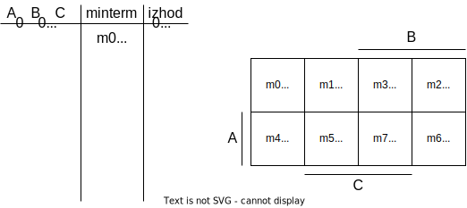
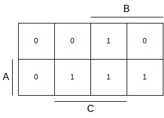

Licenca
To delo je na voljo pod pogoji slovenske licence Creative Commons 2.5:
priznanje avtorstva - nekomercialno - deljenje pod enakimi pogoji.
Celotna licenca je na voljo na spletu na naslovu http://creativecommons.org/licenses/by-nc-sa/2.5/si/. V skladu s to licenco je dovoljeno vsakemu uporabniku delo razmnoževati, distribuirati, javno priobčevati, dajati v najem in tudi predelovati, vendar samo v nekomercialne namene in ob pogoju, da navede avtorja oziroma avtorje in izdajatelja tega dela. Če uporabnik delo predela, kar pomeni, da ga spremeni, preoblikuje, prevede ali uporabi to delo v svojem delu, lahko predelavo dela ponudi na voljo le pod pogoji, ki so enaki pogojem iz te licence oziroma pod enako licenco.

Minimizacija z grafično metodo
Povezava med pravilnostno tabelo in Karnaughjevim diagramom
Če želimo Karnaughjev diagram uporabiti za poenostavitev logične funkcije, si moramo najprej ogledati, kako je Karnaughjev diagram povezan s pravilnostno tabelo. Omenili smo že, da je Karnaughjev diagram samo drugačna predstavitev pravilnostne tabele. To pomeni, da moramo posamezne vrednosti iz stolpca, ki predstavlja izhod logične funkcije, preslikati v ustrezne celice Karnaugjevega diagrama. Postopek preslikave vrednosti prikazuje spodnji interaktivni vodič.

1. korak
Minimizacija logične funkcije s Karnaughjevim diagramom
Minimizacije logične funkcije z grafično metodo se lotimo tako, da pokrivamo enice v Karnaughjevem diagramu. Vendar moramo pri tem upoštevati nekaj pravil:
- enice lahko prekrivamo samo s pravokotniki ali kvadrati,
- pravokotniki oziroma kvadrati morajo prekriti $2^n$ celic diagrama (to pomeni 1, 2, 4, 8, 16 itd. celic) – ne smemo pa prekriti manj ali več kot $2^n$ celic,
- prekriti moramo čim več celic hkrati – če obstaja možnost, da prekrijemo 2 ali 4 celice, potem izberemo tisto, ki prekrije 4 celice,
- posamezno celico lahko prekrijemo več kot enkrat,
- za prekrivanje skušamo uporabiti čim manj pravkotnikov oziroma kvadratov,
- trudimo se hkrati pokriti več kot eno celico (torej vsaj 2).

1. korak